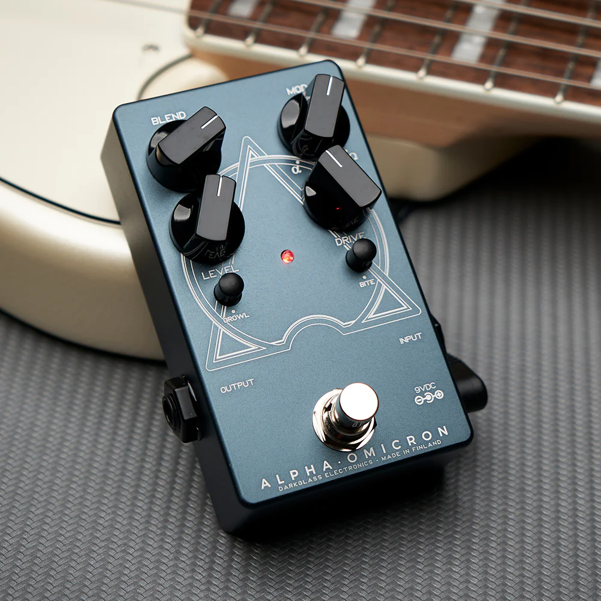

Contexto do projeto
Este site é uma das três componentes do projeto final de licenciatura em Engenharia Informática. As outras duas são um plugin de áudio em C++ e um pipeline de Machine Learning em Python.
O que é o Alpha Omicron

O Darkglass Alpha Omicron é um pedal de distorção analógico para baixo elétrico, conhecido pelo timbre agressivo e pela resposta harmónica complexa. O seu circuito combina múltiplos andares de ganho com filtros específicos, tornando-o difícil de modelar por Processamento Digital de Sinal clássico de forma exata.
Porquê usar Machine Learning
A abordagem tradicional (DSP) requer engenharia reversa do circuito: componente a componente, construir equações que repliquem o comportamento. É trabalhoso, caro, e cada não-linearidade subtil exige modelação dedicada.
O método alternativo — black-box modeling — ignora o circuito interno. Estimula-se o hardware com sinais conhecidos, captam-se as respostas, e treina-se uma rede neuronal a aprender o mapeamento entrada-saída. O que entra e o que sai é tudo o que importa.
Arquitetura geral
Plugin C++ (JUCE)
VST3/AU que corre em qualquer DAW. Usa a biblioteca RTNeural para inferência da rede na audio thread.
Pipeline Python (PyTorch)
Captura de pares Dry/Wet, treino da rede, exportação de pesos num formato que o plugin consome.
WebApp ABX (este site)
Validação percetual: testar se ouvintes humanos conseguem distinguir o plugin do hardware.